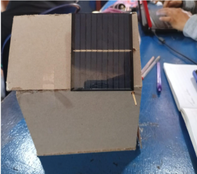
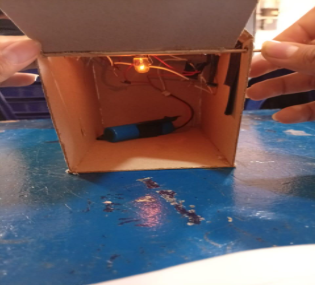

Wires: Connect all the parts of the circuit. They
carry electricity from the solar to the battery and then to the
bulb.
Capacitor: Stores energy for a short time. It keeps
the current steady and prevents sudden changes, helping the circuit
work better.
Bulb holder: The bulb holder keeps the bulb in
place and connects it safely to the circuit. It makes sure the bulb
gets electricity correctly.

Light bulb: The light bulb changes electrical
energy into light. In the project, it shows the result of the solar
system by lighting up the garage.
Battery: The battery stores the energy made by the
solar panel. It gives electricity to the system even when the sun is
not shining.
Diode: Lets electricity flow in only one direction.
In this project, it protects the battery by stopping current from
going back into the solar panel at night.

Solar panel: The solar panel converts sunlight into
electrical energy. It is the main source of renewable energy in the
project and charges the battery to later power the light bulb.
Switch: The switch controls the flow of electricity
in the circuit. It allows us to turn the light bulb on and off
without disconnecting the whole system.